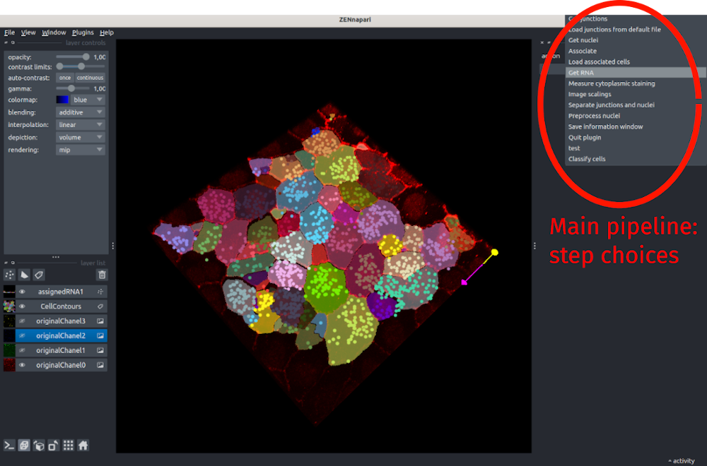

Fish&Feats 
Usage
You can launch fishfeats in Napari by going to Plugins>fishfeats>Start. It will open a file dialog box asking you to select the image that you want to analyze. Possible input formats are currently .tif, .czi, .ims. You can open an issue to ask for another file format to be added.
Then the image will be displayed, with the different channels shown as separated layers on the left panel.
Outputs/Setup
All the outputs of fishfeats will be saved in the folder called results that will be automatically created in the folder containing your image. If you run fishfeats again on the same image, the program will look into that folder for already saved files, so that you can load previous files and don't have to redo all the steps from scratch.
At each step, the parameters that you used for your current image are saved in the associated configuration file (in the results folder, the file yourimagename.cfg) and will be reloaded each time you redo the same step.
From version 1.2 of FishFeats, for all steps, measures are saved in the same file in the results folder, called yourimagename_results.csv. You can open this file out of the pipeline with any software for tabular data reading/analysis (Excel, R..) and analyse/extract the desired columns.
Main features
fishfeats proposes several analyses steps in the main interface:
- Image scalings: set the global parameter of the image to analyse (scalings, channels)
- Get cells: segment/load/correct the cell apical contours in 2D
- Load junctions from default file: directly load the file containing the segmented cells and create the corresponding cells.
- Get nuclei: segment/load/correct the nuclei in 3D.
- Separate junctions and nuclei: if the junctions staining and nuclei staining are in the same channel, to segment them it is necessary to separate them before with this step.
- Get RNAs: segment/assign/correct/measure the RNAs in one or more RNA channel.
- Classify cells: manually classify the segmented cells with a user defined criteria (eg "PCNA or not"). Can be automatically prefilled then manually corrected.
- Measure cytoplasmic staining to measure the intensity of one or more channels in each segmented cell around the surface.

When you open a new image, the plugin will directly go to the first mandatory steps of fixing the image scales and channels (image scalings).
General shortcuts
For each step, FishFeats proposes shortcuts to make its use more agreable/user-friendly, aditionnaly to the ones already proposed by Napari. The specific shortcuts are indicated in the text overlay showed at the top left side of the view. You can always type h to show/hide these help messages.
A few other shortcuts are always available:
* Napari default shortcuts: go to File>Preferences>Shortcuts to see the list of available shortcuts, associated with each kind of layers
* Press h: show/hide current help message
* Press Control-p to activate/desactive vispy visualisation mode in 3D. This mode allows you to control the visualisation angle, but can inactive some selection tools.
* Press F1 to show/hide the first layer (from the list of layers in the left bottom part of the window, starting from the bottom). By default, the first layer should be your input image first color chanel, called originalImageChanel0 in FishFeats.
* Press F2 to show/hide the second layer, F3 for the third layer...
Hierarchical clustering
You can launch this analysis with Plugins>fishfeats>Hierarchical clustering.
It will perform hierarchical clustering on a set of columns (that contains RNA counts for example) and show the resulting clustering on the segmented cells.
See Hierarchical clustering for more infos.
Issues
A list of encountered errors and their solution is given here